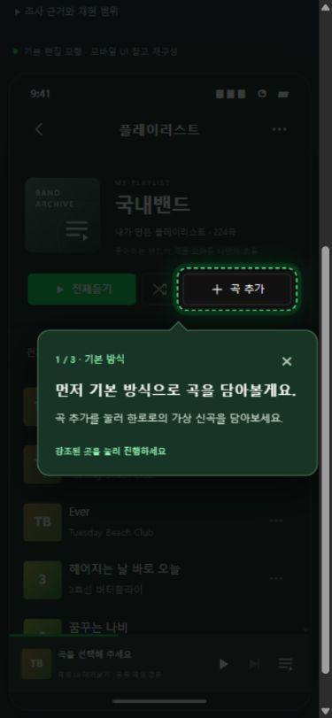
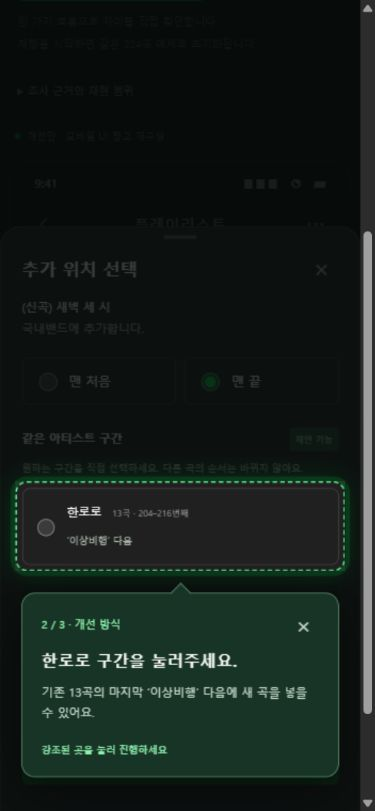

BEFORE / 기본 편집 모형
맨 끝에 붙은 새 곡
- 이상비행 한로로 · 216번째
- ⋮ 다른 아티스트 곡들
- メロン cotoba · 224번째
- (신곡) 새벽 세 시 한로로 · 225번째
기존 한로로 구간과 떨어짐.
추가한 뒤 다시 위치를 찾아 이동해야 함.
Music · Curation · Product design
10년의 멜론 사용 경험에서 출발해,
직접 만든 플레이리스트의 흐름을 유지하는
곡 추가·편집 경험을 제안했습니다.
내가 만든 흐름은 그대로.
설계 개념을 요약한 도식 · 실제 앱 캡처가 아닙니다.
01 / THE START
가격과 멤버십의 매력, 콘텐츠 다양성, 차트와 추천 경험. 플랫폼을 옮기기까지 여러 불편을 느꼈습니다. 하지만 이 문제들을 모두 해결하는 프로젝트는 제가 검증할 수 있는 범위를 넘어섰습니다.
큰 플랫폼 경쟁에서,
내가 반복하던 작은 작업으로.
여러 음악 앱을 사용하며 반복된 불편 중, 수백 곡을 모은 플레이리스트를 계속 정리해야 하는 작업에 집중했습니다. 화면과 동작을 직접 구현하고 비교할 수 있는 문제였기 때문입니다.
| 가격·멤버십 | 사업 정책과 제휴가 필요해 화면으로 검증하기 어려움 |
|---|---|
| 콘텐츠·브랜드 | 공급 생태계와 장기 투자 전략의 영역 |
| 차트·추천 | 사용자 데이터와 추천 정책의 검증이 필요함 |
| 플레이리스트 관리 | 반복 작업을 특정하고, 작동하는 프로토타입으로 비교 가능 → 선택 |
출발점은 개인의 과거 사용 경험입니다. 가격·차트·이용자 변화에 대한 시장 전체의 사실을 입증한 자료는 아닙니다.
02 / THE PROBLEM
좋아하는 밴드의 곡을 한 구간에 모아둔 플레이리스트. 신곡을 담으면 목록 끝에 붙고, 같은 밴드의 곡들 사이로 옮기기 위해 위치를 다시 찾아야 했습니다. 곡이 많아질수록 감상 흐름을 유지하기 위한 관리 부담이 누적됐습니다.
타깃 가설
수백 곡을 장르·무드별로 모으고, 같은 아티스트의 곡들을 묶어 듣는 사람. 모든 음악 이용자를 대표하는 타깃은 아닙니다.
해결할 작업
전체 목록을 다시 정렬하는 대신, 새 곡의 위치만 선택하고 필요한 구간을 함께 이동합니다.
BEFORE / 기본 편집 모형
기존 한로로 구간과 떨어짐.
추가한 뒤 다시 위치를 찾아 이동해야 함.
AFTER / 개선안
같은 아티스트 곡 바로 뒤에 추가.
정리한 흐름을 유지하며 새 곡의 자리만 선택.
224곡 예제의 데모 결과입니다. 기본 모형은 최신 멜론 앱의 기능 전체를 재현하지 않으며, 실제 앱과의 작업 시간 비교도 아닙니다.
03 / THE DECISIONS
같은 아티스트를 모으는 것과 사용자가 만든 감상 순서를 보존하는 것은 다른 목표입니다. 전체 재정렬은 이미 만든 흐름을 바꿀 수 있습니다.
선택: 가나다순은 ‘보기’에만 적용하고, 새 곡은 사용자가 선택한 기존 구간에 삽입합니다. 같은 아티스트의 구간이 여러 개면 임의로 하나를 고르지 않습니다.
밴드별 묶음의 위치를 바꾸는 작업과 한 밴드 안의 곡 순서를 바꾸는 작업은 이동 범위가 다릅니다.
선택: 아티스트 제목 옆 조작은 블록 전체를, 곡 옆 조작은 블록 내부 순서를 바꿉니다. 다른 아티스트 구간으로 개별 곡을 옮길 때는 ‘곡별 편집’을 사용합니다.
이미 정리한 목록을 편집할 때는 잘못 옮길 부담도 함께 고려해야 합니다.
선택: 편집 중 임시 목록을 사용해 저장 전에 취소할 수 있게 했습니다. 최근 변경은 한 번 되돌릴 수 있습니다. 현재는 프론트 상태 기반이며 서버 저장은 구현하지 않았습니다.
04 / THE PROTOTYPE
공개된 멜론 모바일 UI 자료를 참고해 플레이리스트 맥락을 재구성했습니다. 기본 방식 → 개선 방식 → 블록 편집이라는 하나의 흐름에서, 코치마크가 실제 눌러야 할 곳을 안내합니다.


실제 구현 화면입니다. 가상의 신곡과 재생 상태로 시연하며 음원은 재생하지 않습니다.
프로토타입 직접 체험상세 목록·편집 화면은 재구성한 제안입니다. 공식 앱의 최신 화면을 직접 조작한 완전 재현은 아닙니다.
05 / TROUBLESHOOTING
구현 중 발견한 기술 문제와 편집 기능 누락 · 일반 사용자 효과는 별도 검증 필요
문제: 아티스트 묶음을 키보드로 옮기는 과정에서, 블록 안의 곡이 이동 대상으로 잡혔습니다. 사용자가 선택한 이동 단위와 실제 처리 대상이 어긋났습니다.
원인: 묶음 안의 개별 곡도 비활성 sortable로 등록되어, 블록과 곡이 같은 정렬 영역에 함께 남아 있었습니다.
수정: 먼저 묶음 모드에서 내부 곡을 정렬 대상에서 제외했습니다. 이후 내부 편집을 추가하면서 블록 이동과 내부 곡 이동의 드래그 영역을 분리해, 각 영역이 자기 범위의 대상만 처리하게 했습니다.
확인: 키보드로 3곡 블록을 옮겨 내부 순서와 전체 곡 수가 유지되는지 확인했습니다. 내부 곡의 키보드 이동도 별도로 확인했습니다.
문제: 같은 아티스트를 묶어 옮겨도, 그 안에서 듣고 싶은 순서를 조정하는 편집 작업은 끝낼 수 없었습니다.
원인: 묶음 모드에서는 곡별 이동 조작을 숨기고, 블록 전체 이동만 제공했습니다. 곡 단위 이동의 범위도 별도로 정의하지 않았습니다.
수정: 블록 제목 옆 조작과 곡 옆 조작을 분리했습니다. 내부 이동은 같은 블록에 속한 곡끼리만 허용하고, 첫 곡의 위 이동과 마지막 곡의 아래 이동을 막았습니다. 다른 아티스트 구간으로 옮길 때는 곡별 편집을 사용합니다.
확인: 블록을 옮긴 뒤 내부 두 곡의 순서를 변경하고 저장된 목록에 반영되는지 확인했습니다. 블록 경계의 이동 제한도 확인했습니다.
기술 사례는 로컬 구현·브라우저 검증 기록에 근거합니다. 두 번째 사례는 개발 중 확인한 편집 기능 누락이며, 일반 사용자를 대상으로 실시한 사용성 테스트 결과는 아닙니다. 코치마크와 체험 경로 정리는 앞 장의 시연 구성으로 구분했습니다.
06 / THE EVIDENCE
프로토타입이 작동한다는 사실과 실제 사용자에게 효과가 있다는 사실은 다릅니다. 현재 결과는 구현 및 동작 검증까지입니다.
현재 확인한 것
아직 확인하지 않은 것
실제 정리 사례를 먼저 듣고, 같은 과제를 기본 모형과 개선안에서 수행하게 합니다. 순서를 교차해 학습 영향을 줄이고, 구간 선택과 블록 경계가 사용자의 의도에 맞는지 관찰합니다.
계획 중인 검증입니다. 인터뷰·사용성 측정 결과나 이탈률 개선 수치를 임의로 제시하지 않았습니다.
가족·친구와 함께 듣는 음악이 언제나 기본 취향을 대표하지는 않는다는 개인 경험에서 출발했습니다. 기존 편집 기능과 플레이어를 연결한 통합 목업을 목표로, 공통 데이터 구조를 먼저 설계하고 취향 반영 일시중지, 인적·활동 맥락별 취향·추천, 과거 세션 정정·반영 강도를 순서대로 구현할 계획입니다. 각 단계는 시연 가능한 통합 버전으로 마치며 소규모 검증으로 기능의 깊이와 화면 복잡도를 조정합니다. 기존 편집 소스의 테스트·린트·빌드를 재확인하고 경쟁 서비스 공식 자료 예비 조사와 관찰 화면 범위를 정리했습니다. 실제 멜론 모바일 직접 관찰과 새 기능 구현·사용자 검증은 아직 진행 전이며, 현재 체험 가능한 범위는 플레이리스트 편집입니다.
07 / THE TAKEAWAY
음악 서비스의 경험은 추천을 받고 재생하는 순간에 끝나지 않습니다. 사용자는 곡을 모으고, 의미를 붙이고, 순서를 만들며 다시 듣습니다.
이 프로젝트에서는 그 행동을 관찰하고, 해결할 문제를 좁히고, 설계한 규칙을 실제 동작으로 옮겼습니다. 미디어·문화 서비스에서도 사용자의 선택과 맥락을 이해하는 기획·개발을 하고 싶습니다.